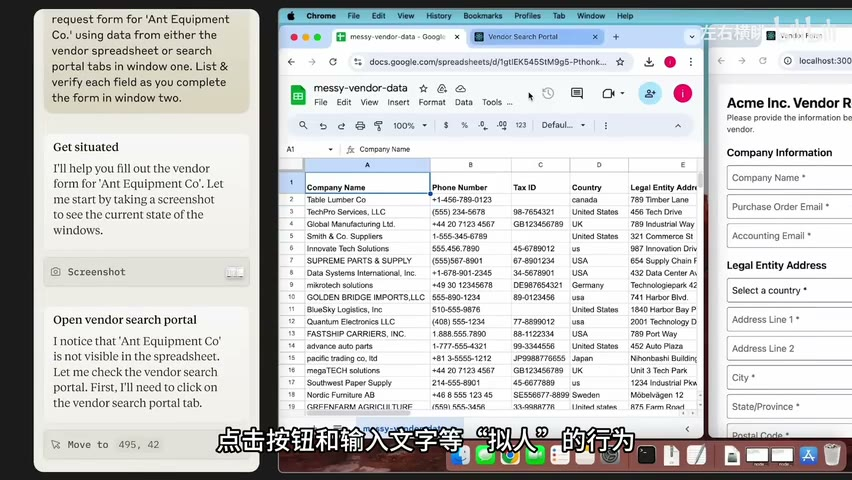

原视频 · 在线回看
点击后联网加载 B 站播放器；本地不下载整段视频。

原视频 · 在线回看
点击后联网加载 B 站播放器；本地不下载整段视频。
来源：Agent：从 GUI 与 API 的螺旋，走向新的人机交互【趋势总结2】
UP 主：左右横眺 · 时长：19 分 28 秒 · 阅读强度：深度
假如你想把一张供应商表格里的资料填进网页表单，聊天助手可以告诉你怎么做，甚至帮你整理好每个字段。但只要填写这一步仍然由你完成，你就还需要在窗口之间切换，寻找对应资料，再逐项复制。我们进一步希望它能读懂任务，找到资料，打开表单，实际完成填写。到了这里，AI 就需要接触软件里的对象和操作，单靠回答一段话已经不够了。
这种能够围绕目标采取行动的助手，通常被称为 Agent。它的具体范围很广，这里先把问题收窄到一件事：让 AI 代替人完成电脑或手机上的软件操作。我们沿着 2024 年几种代表性尝试来理解这件事，重点看操作是怎样发生的，以及人怎样知道操作是否符合自己的意图。
先看比较容易控制的情况。软件已经提供了查询、创建或修改某项内容的函数，每个函数都规定了需要哪些参数。我们把函数的说明交给模型，模型根据用户的要求选择一个函数，再写出相应参数。这种能力通常叫 Function Calling，即函数调用。
“调用”容易让人误以为模型自己进入了软件内部。实际发生的过程需要分开看：模型输出一个调用请求，外围程序接到请求后，检查参数与权限，真正执行函数，然后把结果交回模型。模型再根据返回结果回答用户，或者继续选择下一步操作。模型负责决定要做什么，程序负责把获准的动作执行下去。
API，也就是应用程序编程接口，可以理解为软件留给其他程序使用的一组明确入口。通过入口，我们按照规定的格式提交请求，得到相应结果。入口稳定、功能合适时，程序不必先找到屏幕上的按钮，也不必关心按钮今天换成了什么颜色。它直接按照约定访问那项功能。
这种方法的限制也很直观。模型只能选择已经提供给它的工具；某个软件没有开放所需接口，或者接口只允许读取、不允许修改，模型就无法仅凭理解用户意图完成操作。即使接口存在，开发者仍要处理接入、登录授权、参数转换以及接口变化。软件越多，各自约定的差别越大，维护工作就越多。
我们使用陌生软件时，通常不需要先问开发者要一个 API。我们看到菜单，读出按钮文字，试着点击，再根据新的页面判断下一步。图形用户界面，也就是 GUI，已经替人提供了大量可操作的入口。于是另一条思路很自然：让模型也理解这些画面，通过鼠标、键盘或触屏完成操作。
2024 年展示的 Anthropic Computer Use 就采用了这类方式。助手读取屏幕截图，判断当前状态，再发出移动指针、点击或输入文字等动作。执行程序完成动作后，提供新的截图，助手继续判断。它需要反复经历“看见当前状态—选择动作—执行—再看”的过程，才能逐步接近目标。
看这张画面就容易理解它与普通问答的差别。任务跨越了资料表格与网页表单两个对象，助手既要找对供应商，又要把对应信息放进正确字段。左侧记录让人看见它正在判断什么；右侧实际表单则让人检查它最终改了什么。给出填写建议和完成填写，是两个不同的结果。
早期这种操作方式仍然比较缓慢，也容易出错。截图只记录某个时刻的画面，截图之间可能发生弹窗、页面跳转或加载变化。如果助手仍根据旧画面点击，就可能点到错误位置。一次点击没有成功，还需要重新观察，再判断是等待、重试，还是换一种做法。这里说的是当时产品展示暴露出的困难，不能直接用来评价此后所有版本的能力。
手机也存在类似尝试。助手可以在已有应用中搜索商品、查看信息或填写内容。桌面侧还有把操作安排到虚拟副屏的思路：让助手使用另一块工作区域，减少它与人争用同一个鼠标和当前窗口的情况。这些尝试都在回答同一个体验问题——我们希望把工作交出去，又不希望自己的设备因此一直被占住。
API 与 GUI 经常被放在一起比较，因为它们都能把用户的要求变成软件操作。但它们依赖的东西不同：API 依赖软件提供并维护明确的程序入口，GUI 依赖助手正确理解当前界面并操作它。
| 比较的问题 | 通过 API 操作 | 通过 GUI 操作 |
|---|---|---|
| 怎样找到功能 | 读取工具或接口说明 | 观察页面、识别控件与布局 |
| 怎样表达动作 | 提交规定格式的参数 | 点击、输入、滚动等界面动作 |
| 主要覆盖范围 | 已经开放且获准使用的接口 | 已经能访问、能操作的界面 |
| 常见困难 | 接口缺失、权限或约定变化 | 弹窗、位置变化、状态判断错误 |
| 怎样确认进展 | 检查接口返回值与任务结果 | 重新观察界面与任务结果 |
有些软件同时提供两种入口，具体任务也可能在两种入口之间切换。例如，适合结构化处理的查询可以通过接口完成；某些尚未接入的界面操作，可以由视觉控制补充。选择方式时，需要看哪些信息容易准确取得，哪些动作容易可靠完成，无需坚持所有事情都由鼠标点击，也无需假定所有软件都具备完整 API。
接口调用也并不天然代表成功。请求返回了“已接收”，与用户要的事情已经完成，可能还有距离。同样，屏幕上按钮被点亮，也不能单独证明任务完成。两条路线最终都要回到用户的目标：资料是否找对、内容是否放到正确位置、预期变化是否实际发生。
电脑上，我们还可以编写并执行代码，读写获准访问的文件，把许多已有工具接起来。早期 AutoGPT 之类的项目尝试让模型不断规划、调用工具、读取反馈，再选择下一步；Open Interpreter 则让自然语言需求经过代码，转化成电脑上的具体操作。这些项目的共同价值，是在模型与可执行的工具之间搭起连接。
手机环境通常更受应用权限和系统限制影响。数据与功能分散在不同应用中，第三方程序能直接访问多少，取决于系统与应用开放了什么。即使助手知道用户想做什么，也可能缺少合适入口。语言理解能力和操作权限因此是两件需要分别解决的事。
Apple 的 App Intents 提供了一个接口侧的例子：应用开发者把特定动作和相关数据表达成系统能够理解的形式，使这些能力可以被 Siri、快捷指令等系统功能发现和使用。这样，应用的某些操作不必每次都由用户打开界面逐步完成。可用范围仍然取决于开发者提供了哪些动作，以及用户允许怎样使用它们。（App Intents 官方说明）
GUI 控制利用了应用已经面向人提供的界面，因此可能覆盖一部分尚未通过接口接入的任务。不过，看得见一个页面，不等于获得了页面背后的所有权限。登录、授权、支付确认和平台限制仍然存在。让助手代为点击，并不会自动改变这些边界。
在大语言模型流行之前，人们已经用 IFTTT、Zapier、快捷指令和 RPA 等工具连接软件、自动执行工作。RPA 常被译为机器人流程自动化，其中不少任务也会操作已有界面。过去的流程往往需要人更明确地规定触发条件和动作顺序；引入语言模型后，系统有机会理解更灵活的要求，并根据情境作出一些选择。
这种灵活性并没有消除自动化原有的工程问题。用户仍然需要知道系统做过什么、保存了哪些信息、在哪一步遇到了困难。只看到一句“任务完成”，却无法确认文件改在什么位置，就很难放心继续使用。操作记录、结果展示以及必要时由人接手，都直接影响这种信任。
异常处理尤其重要。页面可能变了，网络可能慢了，工具可能没有返回预期结果。如果系统只擅长沿着一次成功演示的路径向前走，遇到变化就停住，它能承担的实际工作仍然有限。因此，成熟自动化系统在可靠性、隐私、状态管理和恢复方面的经验，依然值得借鉴。
同时，过多提示也会增加负担。一个助手每走一步都要求用户解释和确认，就很难真正减轻工作。需要区分哪些操作已经获得明确授权，哪些变化会影响钱、数据或外部关系，值得暂停确认。让人保留控制与减少无谓打断，需要一起设计。
GUI 任务中存在一个容易被忽略的分工。助手先要决定接下来应该搜索资料、填写字段还是提交表单；等动作确定后，还要在当前画面上找到正确控件。这两个问题相关，却可能以不同方式出错：计划合理但点错了位置，或者按钮找得很准但整个行动方向不对。
AutoGLM 的研究把规划与具体界面定位分开处理。规划侧需要灵活安排动作，并在失败后调整；界面定位侧需要准确地把动作对应到画面上的对象。研究还讨论了通过在线任务与反馈改善能力，让系统逐步应对更困难的操作情境。这个思路特别重视错误恢复，因为现实任务里总会出现与预想不同的状态。（AutoGLM 论文）
为什么软件操作适合探索这样的训练？其中一部分任务具有比较明确的结果：表单是否填写完、目标页面是否打开、指定内容是否保存。系统可以把实际结果作为反馈。不过，能验证某些操作是否完成，并不意味着所有用户意图都有简单的判定规则。搜索到一个商品很容易检查，商品是否真正适合用户，还可能需要更多条件。
我们因此需要同时看行动能力和任务判断。把按钮点得更准确，能够减少执行错误；理解目标、选择合理步骤、检查最终结果，则决定这些动作有没有帮到用户。把不同错误分清楚，才容易知道下一步需要改进哪一部分。
如果助手能够跨应用完成任务，用户开始工作的方式就可能变化。过去，我们先决定打开哪个应用，再在应用里寻找功能；现在，用户可能先告诉助手自己要完成什么，由助手选择需要使用的应用。应用还在提供功能，但它与用户之间多了一层可以安排动作的助手。
这也是左右横眺在当时讨论行业竞争的出发点。操作系统拥有设备与权限管理方面的优势，模型公司拥有模型能力，应用公司熟悉具体业务，创业团队则可能从特定需求切入。谁能更好地帮助用户完成任务，会影响用户习惯从哪里开始。这是一种产品与商业上的分析，不能据此确定任何公司的最终优势。
即使助手承担了更多操作，也不代表人只需要面对一串文字日志。我们比较多个对象、观察整体进展、挑选方案时，图形界面依然很有帮助。助手可以负责搜索、整理与重复填写，人通过清楚的界面看到候选项、选择结果，并理解哪些内容已经改变。
因此，新的人机交互会涉及双向适应。一方面，助手学习使用现有界面；另一方面，软件也可以把状态、对象和可执行动作表达得更清楚，方便人与助手共同使用。未来的设备形态可能继续变化，眼镜等设备也可能成为入口，但用户表达意图、查看结果和保留控制的需要仍然存在。
让 AI 操作软件，需要连接三个环节：理解用户要完成的事，选择并执行允许的动作，观察结果后继续判断。单独一次函数调用或鼠标点击，都只是这个过程的一部分。
API 提供明确的程序入口，GUI 利用已经存在的图形界面。前者受接口覆盖与授权范围影响，后者需要应对画面和状态变化；实际系统可以把两者结合起来。评价时应关注任务是否完成，以及人是否能够理解、确认和控制相关变化。
模型带来的灵活判断，与自动化积累的可靠执行经验，可以相互补充。越希望把工作交给助手，越需要把结果展示、错误恢复和人的接手方式做好。
在供应商资料填表的任务中，模型选择动作、程序执行动作和用户检查结果，分别发生在什么地方？
如果页面临时出现了弹窗，通过 GUI 操作的助手为什么需要重新观察？通过 API 操作是否也可能遇到需要重新判断的情况？
当助手已经能够完成大部分重复操作时，哪些信息仍然值得清楚地展示给人？这些信息怎样帮助人确认结果、发现错误或接手任务？